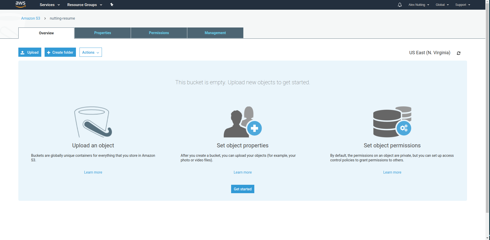

Reference the List of Required software above, visit each official site, and follow the steps for installion. You can install the software using the default settings and should be straightforward.
React Resume Guide
By Alex Nutting
React Resume Guide is a tutorial for developing and hosting your own resume website using Facebook's popular JavaScript framework: React. Why use something like React for such a small project like this? Well, one of the cornerstone rules of software development is Don't Repeat Yourself (DRY). Leveraging Node.js and its package manager: Node Package Manager (NPM), we can easily import free and open source work created by a large community of contributors into our project! We can add interactive graphs, timelines, and other useful components for our React application just by typing a few commands.
Once our React application is built, the next challenge is sharing it with others. Fortunately many cloud providers, AKA server renting companies, provide tools for easily deploying an application to one of their computers and in minutes you can have your very own web server answering requests for your React application. I've chosen to use AWS for this project because they are the most commonly used cloud provider and that's what I am familiar with. Feel free to explore Google Cloud Platform, Microsoft Azure, or Digital Ocean. All of them have free tiers or sign up credit that will allow you to use their services without any cost initially.
This guide will take you through the required software setup, the AWS Account registration setup, and the development of the application. All commands and screenshots will be for the Linux-based Operating System: Ubuntu. The steps will be similar with Windows, but extra configuration will be needed. I will do my best to provide the additional Windows instructions. If you are interested in trying out a new Operating System, I highly recommend looking into getting a Raspberry Pi, a cheap computer perfect for small side projects like this one. It runs it's own Linux-based Operating System called Rasbian. However Rasbian is very similar to Ubuntu and the commands should not change. Let's get started by going over the software you'll need to install.
About this guide
This guide will use many different ways to convey information. Many times throughout this guide you will be asked to copy some code into a file. Blocks of code will be presented like this, with the file name commented at the top.
// main.js
// this is a comment and not executed
/*
This is also a comment
over multiple lines
*/
document.onreadystatechange = () => {
if (document.readyState === 'complete') {
// handle the toggling of active class for side bar navigation
let navs = document.querySelectorAll('.nav')
navs.forEach(nav => {
nav.addEventListener('click', () => {
document.querySelector('.nav.is-active').classList.toggle('is-active')
nav.classList.toggle('is-active')
})
})
}
}
Indentation, while mostly useless in programming, helps maintain readibility of the code so ensure to maintain as much indentation when copying code over as possible. Feel free to add your own comments to the code like they are demonstrated above.
Some commands will need to be entered into the Terminal to either install software or run the project. They will look similar to blocks of code, but each line will have a "$" at the start. The command excludes the dollar sign.
$ npm install --save reactHere's a couple examples of the finished product we'll be making.
Software that will need to be installed on your computer before starting out

|
Visual Studio Code (VSCode) | Integrated Development Environment (IDE) | Official Site |

|
Node.js | JavaScript runtime and NPM | Official Site |

|
Git for Windows (Windows Only) | Git Bash terminal and Git software | Official Site |
This section can be skipped until you are ready to share your site with others.
The sign up process is very simple. Visit the Amazon Web Services Sign Up page to create your account. You will be asked for some personal information like a phone number and zip code as well as a form of payment. Everything we do will be within the free tier and will not cost you anything. However, an unattended account can incur charges, especially if your site brings a lot of traffic.
Ensure you have the software from the Software Installation section installed.
Start by creating a folder on your Desktop. Name it: Resume. We will use this folder to store our project's files. Typically a project's folder is named based on the name of the project.
Continue by opening a Terminal window on Linux or starting the Git Bash program on Windows.
Change directories to the folder we created by typing:
$ cd Desktop/ResumeInitialize our project directory:
$ npm initWhen prompted for input, hit the enter key to use the default option in parentheses. Feel free to add a description and your name as the author. Type "yes" when asked "Is this OK?" and hit enter.
If you type "ls" and hit enter in your Terminal, the contents of the folder will be listed. You'll see a new package.json file there. This file contains all of the meta data about the project.
Finally, open Visual Studio Code. In the middle of the window, click "Open Folder...", navigate to the Desktop, select the React folder, and click Open.
You'll see the contents of the folder listed on the left hand side in the Explorer. Clicking a file will preview it, while double clicking will open it.
While in Visual Studio Code, click Terminal in the top menu, then select New Terminal. From this point forware we can use this convenient terminal for future commands.
Let's set up some folders we'll need before we start with development
$ mkdir -p client/assets client/data client/styles client/src/components- client: All files our web site will use. These files are sent to a user's browser when they request our site.
- client/src: src is short for source. All of the code we will write for our project.
- client/src/components: Each visual element is a component. A header, footer, button, or table are all different components.
- client/data: Information our site will display. Think of the data a resume will need to show. Items such as work history, skills, experience, and education
- client/styles: Everything related to the theme of our site.
- client/assets: Other files like images.
Next, we need to set up a Webpack configuration to properly serve our files for development. Webpack is widely used in web sites because it allows us to bundle and optimize our code. If you'd like to read more, the official site has excellent documentation.
Create the webpack configuration file:
$ touch webpack.config.jsSince we are now beginning to edit files, ensure you always save your files with ctrl+s. Alternatively, in VSCode navigate to file > preferences > Settings, then change the autosave setting to "After Delay", then change the delay to 2000 (2 seconds).
Open the file, then copy the following code into it:
const path = require('path')
const fs = require('fs')
const webpack = require('webpack')
const HtmlWebpackPlugin = require('html-webpack-plugin')
const CleanWebpackPlugin = require('clean-webpack-plugin')
const config = {
mode: 'none',
entry: {
app: './client/src/index.js' // Tell webpack where to find the beginning of our app's code
},
output: {
filename: '[name].bundle.js', // Combine all of our app's files into one file with this name
path: path.resolve(__dirname, 'build') // Output all files to the build directory
},
plugins: [
new CleanWebpackPlugin(['build']),
new HtmlWebpackPlugin({
template: './client/index.html'
})
],
resolve: {
extensions: ['*', '.js']
},
module: { // Tell webpack how to handle different file types
rules: [
{
test: /\.(js|jsx)$/,
exclude: /node_modules/,
use: ['babel-loader']
},
{
test: /\.css$/,
use: [
'style-loader',
'css-loader',
]
},
{
test: /\.(png|svg|jpg|gif)$/,
use: [
'file-loader'
]
},
{
test: /\.scss$/,
use: [
'style-loader',
'css-loader',
'sass-loader'
]
}
]
}
}
module.exports = (env, argv) => {
// Add additional config for development mode
if (argv.mode === 'development') {
config.devtool = 'inline-source-map'
config.devServer = {
contentBase: './build',
hot: true
}
config.plugins.push(new webpack.HotModuleReplacementPlugin()) // Refresh the page for us when a file changes
}
return config
}
Next, we must install some packages to start. We can install them all with one command, but that can get lengthy so I broke them up:
$ npm i -D webpack
$ npm i -D webpack-cli
$ npm i -D html-webpack-plugin
$ npm i -D clean-webpack-plugin
$ npm i -D webpack-dev-server
$ npm i -D css-loader
$ npm i -D sass-loader
$ npm i -D style-loader
$ npm i -D file-loader
$ npm i -D node-sass
$ npm i -D babel-loader
$ npm i -D @babel/core
$ npm i -D @babel/preset-env
$ npm i -D @babel/preset-react
$ npm i -D babel-plugin-syntax-dynamic-import
$ npm i -D babel-plugin-transform-class-properties
If you open the package.json folder, you will now see a devDependencies block with all of the packages and their versions listed.
Let's create a couple more files:
$ touch .babelrc
$ touch .gitignore
.babelrc contains configuration for babel. .gitignore will ignore files from being added to git. Using git is out of scope of this guide, but I took the steps so I'll include them here anyways.
.babelrc should include:
{
"presets": [
"@babel/preset-env",
"@babel/preset-react"
],
"plugins": [
"transform-class-properties",
"syntax-dynamic-import"
]
}
.gitignore should include:
node_modules
build
client/build
You may have noticed a block named "scripts" in the package.json. This block allows us to define reusable commands for our project. Let's add a "start" and "build" command to that block so it ends up looking like this:
"scripts": {
"start": "webpack-dev-server --open --mode=development",
"build": "webpack --mode=production",
"test": "echo \"Error: no test specified\" && exit 1"
},
Let's create our first client file: the index.html
$ touch client/index.html
The contents should look like this, but subsitute my name for your name.
<!DOCTYPE html>
<html>
<head>
<meta http-equiv="Content-type" content="text/html; charset=utf-8">
<meta name="viewport" content="width=device-width, initial-scale=1">
<title>Alex Nutting - Resume</title>
</head>
<body>
<div id="root"></div>
<script defer src="https://use.fontawesome.com/releases/v5.1.0/js/all.js"></script>
</body>
</html>
With everything in place, we are now ready to begin development!
All of our React code will be in the client/src directory. Before we can get started, we'll need to install some more packages. This is all of the packages our site will need.
$ npm i -S react
$ npm i -S react-dom
$ npm i -S react-router-dom
$ npm i -S react-loadable
$ npm i -S react-hot-loader
$ npm i -S bulma
$ npm i -S bulma-extensions
Let's create a few files to start.
$ touch client/src/index.js
$ touch client/src/App.js
$ touch client/src/Router.js
$ touch client/src/components/HomePage.js
$ touch client/styles/index.scss
- index.js: The start of our site code.
- App.js: The start of our react application.
- Router.js: Configure react to show different pages depending on the URL. For example: oursite.com/home would be different than oursite.com/experience
- HomePage.js: The page a user first sees when they visit our site.
- index.scss: All of the themeing for our site.
index.js should include the following:
// import dependencies we'll need for this file
import React from 'react'
import { render } from 'react-dom'
import { AppContainer } from 'react-hot-loader'
// import our react app
import App from './App'
// reference the mount point in our index.html
const mountPoint = document.getElementById('root')
// Tell react to start the application
render(
<AppContainer>
<App/>
</AppContainer>,
mountPoint
)
// Setup automatic refreshing when we change a file
if (module.hot) {
module.hot.accept('./App', () => {
const NextApp = require('./App').default
render(
<AppContainer>
<NextApp/>
</AppContainer>,
mountPoint
)
})
}
App.js should include:
import React from 'react'
import { HashRouter } from 'react-router-dom'
import Router from './Router'
import '../styles/index.scss'
export default class App extends React.Component {
render () {
return (
<HashRouter>
<Router/>
</HashRouter>
)
}
}
Router.js should include:
import React from 'react'
import { Switch, Route } from 'react-router-dom'
import Loadable from 'react-loadable'
const LoadHomePage = Loadable({
loader: () => import('./components/HomePage'),
loading: () => <div>Loading...</div>
})
export default () => {
return (
<Switch>
<Route exact path='/' component={LoadHomePage}/>
</Switch>
)
}
HomePage.js should include:
import React from 'react'
export default class HomePage extends React.Component {
render () {
return (
<div>Hello World! Welcome to my Resume!</div>
)
}
}
Finally, index.scss should include:
@import "~bulma/bulma.sass";
It's about time to start the application. You can run our development server using the command below. You'll notice a new browser tab open with our site presented to us. The terminal will now have a programm running in it that will watch for changes in our react files, then update our page accordningly. To exit this program at any time, click on the Terminal then press ctrl+c. I recommend you open a separate Terminal window for the npm start command, then leave the VSCode Terminal open for additional commands.
$ npm start
Since the data we want to display on our resume may change, it's better to put this information in a file separate from the rest of the application. This will make it easy to update later since we will only need to change this single file. Create an index.js in the data folder.
$ touch client/data/index.js
The skeleton of our data/index.js is presented below. You may copy this skeleton and fill out the information for yourself. I will also include my data for reference.
export default {
name: "",
summary: "",
contact: {
location: "",
email: "",
phone: "", // optional
homePage: ""
},
experience: [
"",
""
],
education: [
{
school: "",
description: "",
startDate: "",
endDate: ""
}
],
professions: [
{
employer: "",
title: "",
startDate: "",
endDate: "",
responsibilities: [
"",
""
]
}
]
}
export default {
name: "Alex Nutting",
summary: "Highly motivated Software Engineer with excellent team collaboration skills. Able to thrive in very busy, deadline centric environments. Strong written and verbal communication skills.",
contact: {
location: "Slatersville, RI 02876",
email: "nuttinga17@gmail.com",
phone: "",
homePage: "https://github.com/anutting"
},
experience: [
"Back-end development with Node.js.",
"Front-end development with HTML, CSS, Javascript, React, Bulma, & Bootstrap",
"Development tools: Bash, Vagrant, DOcker, Git, & Webpack",
"Usage of systems such as Jenkins, Puppet, AWS, and Kubernetes."
],
education: [
{
school: "New England Institute of Technology, Each Greenwich, RI",
description: "Pursuing a Bachelor of Science degreen in Information Technology/Software Engineering. GPA 3.7. Dean's List made regularly. Alpha Chi National Honor Society member.",
startDate: '06/2015',
endDate: 'present'
},
{
school: "Wentorth Institute of Technology, Boston, MA",
description: "Coursework completed toward a Bachelor of Science degree in Computer Sciences",
startDate: "08/2012",
endDate: "05/2013"
},
],
professions: [
{
employer: "Hasbro, Inc. Pawtucket, RI",
title: "Systems Engineer Intern, now Associate Systems Engineer",
startDate: "2017",
endDate: "present",
responsibilities: [
"Support Continuous Integration and Continuous Delivery pipelines.",
"Create tools to automate or streamline processes.",
"Participate in regular scrum rituals.",
"Work with partners from different departments to gather requirements and create web applications that meet those requirements.",
"Identify, document, and manage tasks in a ticketing system."
]
},
{
employer: "Bristol Warren Regional School District, Bristol, RI",
title: "Information Technology Intern",
startDate: "2016",
endDate: "2017",
responsibilities: [
"Collaborate with Network and System administrators to complete IT projects.",
"Provide technical support to district employees and students through the use of a ticketing system.",
"Install, repair, and inventory new and hold hardware: Laptops, Desktops, printers, projectors, etc."
]
}
]
}
When comparing my data to the skeleton, notice how there are many items within the square brackets ([ ]). These brackets can hold as many records as you like, as long as your follow the pattern within the brackets.
Let's begin by adding a new component: the Navbar.
$ touch client/src/components/Navbar.js
Its contents, ensuring you replace my name with yours:
import React from 'react'
import { Link } from 'react-router-dom'
export default class Navbar extends React.Component {
// Keep track of whether the hamburge menu is toggled or not
state = { isMenuActive: false }
// Event to update the isMenuActive flag
toggleMenu = () => this.setState(oldState => Object.assign({}, oldState, { isMenuActive: !oldState.isMenuActive}))
// Return the proper class when the menu is active
activeClass = () => this.state.isMenuActive ? 'is-active' : ''
render () {
return (
<div className='navbar'>
<div className='container'>
<div className='navbar-brand'>
<Link to="/">
<span className='icon is-large'>
<i className='fas fa-2x fa-home'/>
</span>
</Link>
<span className={`navbar-burger ${this.activeClass()}`} data-target='navbarMenu' onClick={this.toggleMenu}>
<span></span>
<span></span>
<span></span>
</span>
</div>
<div id='navbarMenu' className={`navbar-menu ${this.activeClass()}`}>
<div className='navbar-end'>
<Link to="/experience" className='navbar-item'>Experience</Link>
<Link to="/education" className='navbar-item'>Education</Link>
<Link to="/contact" className='navbar-item'>Contact</Link>
</div>
</div>
</div>
</div>
)
}
}
We must update the HomePage.js to use our new navbar, give our site a nice background, and use the data we've prepared.
import React from 'react'
import Navbar from './Navbar'
import my from '../../data'
export default class HomePage extends React.Component {
render () {
return (
<section className='hero is-info is-fullheight'>
<div className='hero-head'>
<Navbar />
</div>
<div className='hero-body'>
<div className='container'>
<h1 className='title'>{my.name}</h1>
<h2 className='subtitle'>{my.summary}</h2>
<ul>
{my.experience.map((exp,i) => (
<li key={i}>{exp}</li>
))}
</ul>
</div>
</div>
</section>
)
}
}
I've given our site a nice blue background. If you'd like to change the color, modify the "is-info" text found on line 7 of the HomePage.js file. Experiement with other options: removing is-info entirely, is-primary, is-danger, is-warning, is-link, is-success, is-light, or is-dark. Also try adding is-bold to any of the previous options for a gradient effect.
Start my creating the Experience Page file.
$ touch client/src/components/ExperiencePage.js
Its contents should be:
import React from 'react'
import Navbar from './Navbar'
import my from '../../data'
export default class ExperiencePage extends React.Component {
render () {
return (
<section className='hero is-info is-fullheight'>
<div className='hero-head'>
<Navbar />
</div>
<div className='hero-body'>
<div className='container'>
<h1 className='title'>Work Experience</h1>
{my.professions.map((profession,i) => (
<div key={i} className='notification is-info is-narrow'>
<p className='title'>{profession.employer}</p>
<p className='subtitle'>{profession.title}. {profession.startDate} - {profession.endDate}</p>
<p></p>
<ul>
{profession.responsibilities.map((responsibility,j) => (
<li key={j}>{responsibility}</li>
))}
</ul>
</div>
))}
</div>
</div>
</section>
)
}
}
We need to add a new route to our Router. Paste this below the LoadHomePage.
const LoadExperiencePage = Loadable({
loader: () => import('./components/ExperiencePage'),
loading: () => <div>Loading...</div>
})
Add another Route within the Switch.
<Route exact path='/experience' component={LoadExperiencePage}/>
Create the Education Page file.
$ touch client/src/components/EducationPage.js
Add content to the Education Page
import React from 'react'
import Navbar from './Navbar'
import my from '../../data'
export default class EducationPage extends React.Component {
render () {
return (
<section className='hero is-info is-fullheight'>
<div className='hero-head'>
<Navbar />
</div>
<div className='hero-body'>
<div className='container'>
<h1 className='title'>Education</h1>
{my.education.map((education,i) => (
<div key={i} className='notification is-info'>
<p className='title'>{education.school}</p>
<p className='subtitle'>{education.description}</p>
<p>{education.startDate} - {education.endDate}</p>
</div>
))}
</div>
</div>
</section>
)
}
}
Similar to the Education page, let's add some code to the Router.js.
const LoadEducationPage = Loadable({
loader: () => import('./components/EducationPage'),
loading: () => <div>Loading...</div>
})
<Route exact path='/education' component={LoadEducationPage}/>
Let's create our final page: ContactPage.js.
$ touch client/src/components/ContactPage.js
Its contents:
import React from 'react'
import Navbar from './Navbar'
import my from '../../data'
export default class ContactPage extends React.Component {
render () {
return (
<section className='hero is-info is-fullheight'>
<div className='hero-head'>
<Navbar />
</div>
<div className='hero-body'>
<div className='container'>
<h2 className='title'>
{my.contact.email}
<br/>
{my.contact.location}
<br/>
{my.contact.phone}
</h2>
</div>
</div>
</section>
)
}
}
Once again let's add a couple records to our Router:
const LoadContactPage = Loadable({
loader: () => import('./components/ContactPage'),
loading: () => <div>Loading...</div>
})
<Route exact path='/contact' component={LoadContactPage}/>
If you made it this far, you now have a basic site to showcase your work! Hopefully you've learned a thing or two about how modern web sites are created. I encourage you to dive deeper into react by watching video guides, reading documentation, and experimenting on your own. In the following sections I'll go over using AWS to make this site available to others.
Now that our development is complete, we must prepare our project to run in AWS. Webpack allows us to turn all of our client/src files into just a few files. Run the next command and see what happens.
$ npm run build
A new "buid" folder has been created with a few files. These are the files we will upload to AWS as our web site.
S3 is AWS's storage service. Think of it as a high performance Google Drive or OneDrive made specifically for serving files over the internet. Everytime you upload an image to a web site, it's likely that it ends up in S3. S3 organizes its files into "Buckets". Let's create one now.
Log into your AWS account that was set up during the AWS Account Setup section. You should end up at the dashboard picured below.
Under the Storage section, click on S3.
Click the "Create Bucket" button.
Under Bucket name type in: <last-name>-resume so my bucket is named nutting-resume, then click next through the rest of the pages.
You should see your new bucket in the list. Click on the name. and arrive at your bucket's page.
Click the "Upload" button, then "Add files"
Navigate to your Desktop > Resume > build
ctrl+click each file so they are all highlighted, then click Open. Click "Next" through the pages, then watch your files upload.
AWS Cloudfront is a Content Deliver Network (CDN). It allows us to distribute our website files across the entire globe if we wanted to.
Return to the AWS Console home page by clicking the AWS Logo at the top of the page.
In the search bar being typing "cloudfront" and select CloudFront once it appears.
Click New Distribution, then under Web select Get Started.
Next to Origin Domain Name, select our s3 URL
Scroll down until you see the Price Class dropdown in the Distribution Settings section. Change the Price Class to be "Use Only U.S., Canada and Europe
Scroll down until you see the Default Root Object. Type in "index.html"
Scroll to the bottom, then click "Create Distribution". You should see a screen similar to the image below.

We must now give CloudFront access to get our files from S3. Select Origin Access Identity from the left hand menu. Click "Creat OAI". Copy the Amazon S3 Canonical User ID for later.
Navigate back to S3. Select your bucket. Click on the Permissions Tab, then the Bucket Policy button.
Paste the code below into the edit text area
{
"Version":"2012-10-17",
"Id":"PolicyForCloudFrontPrivateContent",
"Statement":[
{
"Sid":" Grant a CloudFront Origin Identity access to support private content",
"Effect":"Allow",
"Principal":{"CanonicalUser":"CloudFrontOriginIdentityCanonicalUserID"},
"Action":"s3:GetObject",
"Resource":"arn:aws:s3:::examplebucket/*"
}
]
}
Replace "CloudFrontOriginIdentityCanonicalUserID" with your Amazon S3 Canonical User ID from earlier. Keeping the quotes. On Resource line replace the examplebucket with the name of your bucket.
Click save.
In order for your site to appear like it's coming from your own custom URL, a domain name must be purchased through AWS's Route53 service. On average, a URL costs about $12.00 per year. If you aren't quite ready to spend money on your own domain name, you can forego this section and use cloudfront's URL.
Return to the AWS Console home page by clicking the AWS Logo at the top of the page.
In the search bar being typing "route53" and select Route 53 once it appears.